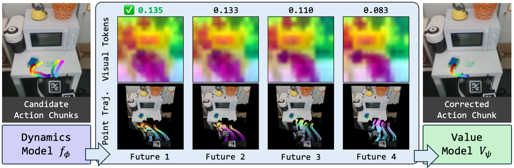

Method

Left: We pretrain shared policy, dynamics, and value representations from human videos to support cross-embodiment robot self-improvement. The policy model predicts wrist actions represented by a 6-DoF pose and a hand-closure variable. The dynamics model forecasts action-conditioned world states represented by DINO-v3 visual features and 3D point trajectories. The value model learns an embodiment-agnostic progress representation that estimates a state's proximity to task success.
Right: Building on these pretrained models, we develop a self-improvement pipeline that learns from autonomous robot experience. Successful and failed rollouts are used to adapt the dynamics and value models, while Dynamics-Guided Action Correction (DGAC) converts recoverable failures into corrective supervision. The resulting trajectories are then used for policy improvement through advantage-conditioned policy extraction, enabling continual learning without human intervention.
Dynamics-Guided Action Correction (DGAC)
DGAC converts failed states into corrective supervision. It uses the learned dynamics and value models to rank candidate actions and identify the best correction for near-failure but recoverable states, without human intervention.

Given a failed state, DGAC samples candidate corrective actions (colorful trajectories), predicts their future states and values, and selects the highest-value proposal (green) as the corrective action, adding it to the repair dataset for policy supervision.